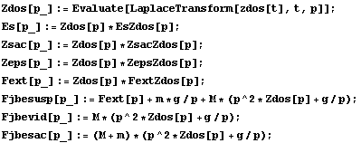

Calculs
In[143]:=
In[144]:=

In[152]:=
In[160]:=
Created by
Mathematica
(June 7, 2006)
![es[t_] := Evaluate[Chop[Re[InverseLaplaceTransform[Es[p], p, t]]]] ; zsac[t_] := Evaluate[Chop ... seLaplaceTransform[Fjbesac[p], p, t]]]] ; P[t_] := 1/T * NIntegrate[es[x]^2/Rch, {x, t, t + T}] ;](../HTMLFiles/index_6.gif)
![ϕ[fct_][ω_] := Arg[fct[ * ω]] ; ϕ[EsZdos][ω_] := Arg[EsZdos[& ... QUI NE SERVENT QUE POUR BODE !! !! !! ! *) ; Gain[fct_][ω_] := Abs[fct[ * ω]] ;](../HTMLFiles/index_7.gif)